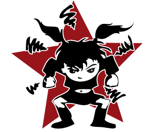

Par Delphine Papin , Francesca Fattori , Eric Dedier et Xemartin Laborde
Enquête Travail et mariage forcés, exploitation sexuelle... les femmes et les enfants paient le plus lourd tribut.
Selon l’Organisation internationale du travail (OIT) et la Rapporteuse spéciale sur les nouvelles formes d’esclavage – un mandat créé par l’ONU en 2007 –, l’esclavage contemporain touche aujourd’hui plus de 40 millions de personnes à travers le monde. Pratiqué depuis l’Antiquité, l’esclavage a connu son apogée avec la mise en place de la traite des Noirs et du commerce triangulaire entre l’Europe, l’Afrique et l’Amérique aux XVIIe et XVIIIe siècles, avant d’être progressivement aboli, comme par exemple par la France, en 1848. Mais les formes d’exploitation proches de l’esclavage n’ont pas disparu. Aujourd’hui, plus de 70 % des victimes sont des femmes – surreprésentées dans les formes d’exploitation sexuelle et de mariage forcé. Une victime sur quatre est un mineur.
Note : Les formes d’esclavage contemporain ne sont pas toutes prises en compte dans les estimations fournies par la Fondation australienne Walk Free et l’OIT. Manquent ainsi les victimes de trafic d’organes ou encore les enfants soldats.
La condition des femmes est souvent un bon indicateur de la santé d’une société et de l’état d’un régime politique. Celle réservée aux Marocaines reflète à la fois la remarquable vitalité d’un pays où de plus en plus de femmes accèdent aux responsabilités, et un système hypocritement obsédé par la virginité, où la liberté des mœurs sert de prétexte à des règlements de comptes politiques. Les poursuites judiciaires pour « débauche » – autrement dit relations sexuelles hors mariage – et « avortement clandestin », visant Hajar Raissouni, 28 ans, journaliste au quotidien arabophone Akhbar Al-Yaoum, traduisent la persistance d’une législation passéiste et l’utilisation des femmes comme boucs émissaires, dans un pays qui se veut moderne.
Lire aussi Au Maroc, Hajar Raissouni, journaliste discrète, devenue un symbole
« Quand Hajar, son journal, sa famille deviennent un peu gênants, ce pouvoir s’active à saper son ambition dans la vie et dans son métier de journaliste » , dénonce-t-il. Il tient à rappeler que si l’arrestation de sa nièce est une occasion de dénoncer des lois liberticides, notamment pour les femmes, il s’agit aussi de dénoncer les méthodes d’un « pouvoir répressif » qui utilise ces textes pour procéder à des arrestations arbitraires.